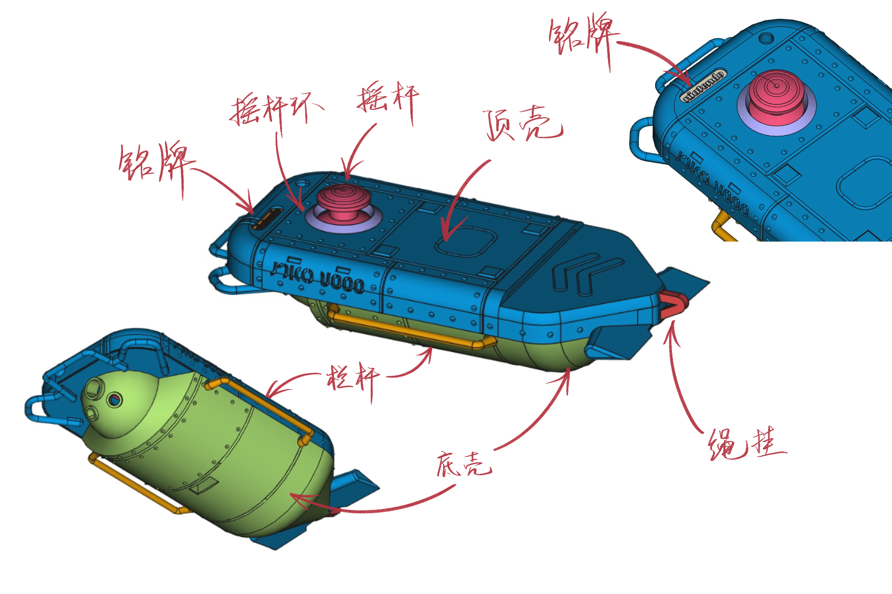

CQ-80 Terminal (NAMACO端末)
目录
1. 展示
自制章鱼 DLC 里的 NAMACO 终端！不光还原了外形，还加入了蓝牙音乐控制器的功能，晚上还可以把探照灯用作夜灯！3D 打印外壳和打印的电路板，不是手工达人也可以自己做！
(photo)
(photo)
(promo)
| 长按摇杆 | 匹配蓝牙设备 |
| 按一下摇杆 | 不知道干啥用 |
| 上推摇杆 | 切换灯光 |
| 下推摇杆 | 播放/暂停 |
| 左/右推摇杆 | 上/下一首 |
| 顺时/逆时针转 | 升高/降低音量 |
我还想加入随机/循环/快进/快退功能来着，但是可能因为这些功能不常用，电脑不能识别，可恶。
2. 还原对比
3. 制作指南
这个终端还是很容易做的，毕竟部件和电路板都是打印的。只需要需要给部件染色，焊一点电子元件，上传程序到微型处理器上，最后组装到一起就行了。
因为我在北美，所以我用来 3D 打印的网站（Shapeways）和购买各种零部件的网站对国内的乌贼来说可能没什么参考价值，想做的乌贼需要自己找一找这样的网站和商店。
3.1. 3D 打印的部件
一共有八个需要打印的部件：顶壳底壳，摇杆和摇杆环，左右栏杆，铭牌和绳挂。3D 模型文件在 /step 和 /dae 目录下。 step 和 dae 是 3D 模型的文件格式，任何 3D 打印网站都会至少支持其中一个格式。

图1 3D 打印的部件和名字标注
找到提供 3D 打印的网站以后，一般上传模型文件然后选择制作工艺的材料，和其他一些细节就可以了。
我推荐用 MJF 或者 SLS 的工艺和尼龙12（PA12）的材料。PA12很结实也不贵。SLA 工艺也可以，但是会更贵。
因为铭牌又小又精细，SLA 就比较适合。SLA 打印精度更高。材料的话感觉SLA支持的都可以。
别用 FDM，就是家用的 3D 打印机的工艺，精度太低，而且有些部件的结构 FDM 打印不了。
感兴趣的乌贼可以看看这篇对 3D 打印工艺的介绍：3D Printing Technology Comparison: FDM vs. SLA vs. SLS。SLS 和 MJF 很相似，里面说的关于 SLS 的东西基本上对 MJF 也一样。
3.2. 安装螺母
3.3. 给部件染色
给部件染色要用尼龙染料，因为部件是尼龙做的。我找的染料和颜色配方都是北美的，国内的乌贼自己得找一找。主体的奶灰我用的这个颜色：Special White，紫红色的部份用的这个颜色：Red Candies。
有能力的乌贼也可以喷漆，我感觉喷漆可能更还原，因为其实终端上有不只一个颜色。喷漆的话表面估计也会更光滑。
3.4. 把程序上传到微型处理器上
这一步需要电脑，micro USB数据线和 Adafruit 的微型处理器。
- 按照这个指南—Arduino Support Setup—安装 Arduino IDE。我们用的处理器是 nRF53832。
- 按照这个指南—Arduino Board Testing—测试一下板子能用，我们能上传程序。
- 用 Arduino IDE 打开
/arduino/controller/controller.ino，把程序上传到处理器。
3.5. 打印电路板
我们要打印两个电路板，一个主板（/board），一个 USB 接口（/usb_breakout）。国内打印电路板的网站应该挺多的，随便找一个，把 zip 文件上传到网站上（/board/board.zip 和 /usb_breakout/usb_breakout.zip）就行了。
3.6. 焊接电子部件
3.7. 组装
底壳：
- 用螺丝把usb接口拧在底壳上
- 用螺丝把主板拧在底壳上
- 把micro usb接头插到微型处理器上
- 把摇杆装上
顶壳：
- 把摇杆环粘上
- 把四个 LED 装上
- 把绳挂粘上
- 把电池粘上
组装：
- 把 LED 的线插到主板对应的接头上
- 把电池插到微型处理器上
- 上下壳装好
- 把左右栏杆插上
4. 部件明细
3D 打印的部件（在 /step 和 /dae 里有模型文件）：
机械零件：
打印的电路板：
电子零件：
- Adafruit Feather nRF52 Bluefruit LE (nRF52832) (nRF52840 should also work if you know how to modify the program)
- Adafruit Lithium Ion Battery 3.7V 2000mAh
- Alps RKJXV1224 joystick (aka switch pro controller replacement joystick)
- Molex USB 2.0 type-A female vertical mount connector (product number 1050570001)
- Sparkfun USB micro-B male breakout (product number BOB-10031)
- Micro USB 线（用来上传程序）
- USB 公对公线（用来给终端充电）
电子耗材：
- 5mm red LED × 1 （指示灯）
- 3mm green LED × 1 （电量指示灯）
- 8mm white LED × 1 （头灯）
- 5mm warm-white LED × 2 （副灯）
- 电阻，220ω × 4，100Kω × 1。具体电阻不需要很精确，差不多就行。
- 跳线（母）
- 金属接口
- LCD 胶带（手机里粘屏幕电池的那种）
染料：
工具：
- 电烙铁套装（电烙铁和焊锡，架子）
- 装热熔螺母的电烙铁头